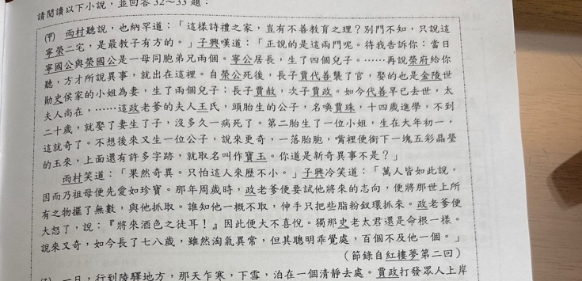
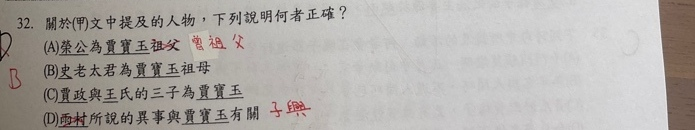

分享原卷｜第32題
完整原題
作答所需文章／材料
（甲）雨村聽說，也納罕道：「這樣詩禮之家，豈有不善教育之理？別門不知，只說這寧榮二宅，是最教子有方的。」子興嘆道：「正說的是這兩門哩。待我告訴你：當日寧國公與榮國公是一母同胞弟兄兩個。寧公居長，生了四個兒子。……再說榮府給你聽，方才所說異事，就出在這裡。自榮公死後，長子賈代善襲了官，娶的也是金陵世勛史侯家的小姐為妻，生了兩個兒子：長子賈赦，次子賈政。如今代善早已去世，太夫人尚在，……這政老爹的夫人王氏，頭胎生的公子，名喚賈珠，十四歲進學，不到二十歲，就娶了妻生了子，沒多久一病死了。第二胎生了一位小姐，生在大年初一，這就奇了。不想後來又生一位公子，說來更奇，一落胎胞，嘴裡便銜下一塊五彩晶瑩的玉來，上面還有許多字跡，就取名叫作寶玉。你道是新奇異事不是？」 雨村笑道：「果然奇異。只怕這人來歷不小。」子興冷笑道：「萬人皆如此說，因而乃祖母便先愛如珍寶。那年周歲時，政老爹便要試他將來的志向，便將那世上所有之物擺了無數，與他抓取。誰知他一概不取，伸手只把些脂粉釵環抓來。政老爹便大怒了，說：『將來酒色之徒耳！』因此便大不喜悅。獨那史老太君還是命根一樣。說來又奇，如今長了十七八歲，雖然淘氣異常，但其聰明乖覺處，百個不及他一個。」 （節錄自《紅樓夢》第二回）關於（甲）文中提及的人物，下列說明何者正確？
(A) 榮公為賈寶玉祖父
(B) 史老太君為賈寶玉祖母
(C) 賈政與王氏的三子為賈寶玉
(D) 雨村所說的異事與賈寶玉有關
先想一想，再查看答案、解說與原圖
原卷作答：D，原卷紅筆訂正B
正確答案：B。史侯家的小姐嫁給賈代善，生賈政；賈政之子為寶玉，所以史老太君是寶玉祖母。
逐項解析
| 選項與原句 | 判讀 | 句意與判斷理由 |
|---|---|---|
| (A) 榮公為賈寶玉祖父 | 不選 | 世系是榮公→賈代善→賈政→賈寶玉，所以榮公是寶玉曾祖父，不是祖父。 |
| (B) 史老太君為賈寶玉祖母 | 應選 | 史侯家的小姐嫁給賈代善，生賈政；賈政之子為寶玉，所以史老太君是寶玉祖母。 |
| (C) 賈政與王氏的三子為賈寶玉 | 不選 | 王氏頭胎生賈珠，第二胎為女兒，後來才生寶玉；寶玉為次子，不是第三個兒子。出生胎次與兒子排行不同。 |
| (D) 雨村所說的異事與賈寶玉有關 | 不選 | 甲文中敘述寶玉銜玉出生異事的是子興，不是雨村；不能只看故事確與寶玉有關便忽略說話者。 |
詳細說明與解題步驟
先整理三代直系親屬：賈代善與史老太君→賈政與王氏→賈寶玉。再往上一代才是榮國公。「第三胎」也不能直接換成「三子」；中間一胎是女兒。原卷B用「史老太君」，不改寫成AI的史老太太。
【A】世系是榮公→賈代善→賈政→賈寶玉，所以榮公是寶玉曾祖父，不是祖父。
【B】史侯家的小姐嫁給賈代善，生賈政；賈政之子為寶玉，所以史老太君是寶玉祖母。
【C】王氏頭胎生賈珠，第二胎為女兒，後來才生寶玉；寶玉為次子，不是第三個兒子。出生胎次與兒子排行不同。
【D】甲文中敘述寶玉銜玉出生異事的是子興，不是雨村；不能只看故事確與寶玉有關便忽略說話者。
核對註記：已實看原卷並核對題幹、全部選項與必要文章；未確認課本對應課次，歸綜合。
原圖（僅本題）

